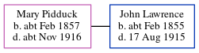

Annie Elizabeth Horn (née Walker) 1876 - c1972
[ Home ] | [ Calendar ] | [ Surnames Index ] | [ Errors ] | [ Family History ]Annie Walker, the wife of Charles Horn (the first cousin three-times-removed on the father's side of Nigel Horne), was born in Thanet, Kent, England on 2 Jan 18761,2,3,4, was baptised in Margate, Kent, England on 6 Feb 1876 and married Charles (a fisherman with whom she had 8 children: Charles G, Pleasant Emily, Herbert Jack, Annie Rose, Walter Stephen, Frederick, Doris Olive and Frances, along with 3 surviving children) St Lawrence in Thanet on 3 Jun 19005.
During her life, she was living at Nelson Crescent, Ramsgate, Kent, England on 31 Mar 19011; and at 4 Bloomsbury Road in Ramsgate on 29 Sept 19392.
She died c. Aug 1972 in Ashford, Kent, England4.
Children
- Charles G was born c. 1902
- Pleasant Emily was born on 1 Mar 1903
- Herbert Jack was born on 19 Oct 1904
- Walter Stephen was born on 22 Apr 1910
- Doris Olive was born on 11 Sept 1913
Citations
- 1901 England, Wales & Scotland Census - Findmypast (was age 25 and the wife of the head of the household)
- 1939 Register - Findmypast (was the wife of the head of the household)
- England & Wales births 1837-2006 - Findmypast
- England & Wales deaths 1837-2007 - Findmypast
- Kent, Canterbury Archdeaconry Marriages - Findmypast
Media
1939 Register Transcription - TNA-R39-1757-1757F-002-07
Kent, Canterbury Archdeaconry marriages - GBPRS/CANT/M/97022351/2
England Marriages 1538-1973 - R_848396558/2
England & Wales marriages 1837-2005 - BMD/M/1900/2/AZ/000399/054
England Births & Baptisms 1538-1975 - R_885526132
Kent Baptisms - GBPRS/CANT/B/96224149
Kent Baptisms - GBPRS/CANT/B/96275177
1939 Register - TNA-R39-1765-1765D-023-27
England & Wales Deaths 1837-2007 - BMD-D-1972-3-AZ-000524-085
Family Tree
Map
Generated by ged2site. Last updated on Jul 3, 2024
Known Issues
Baptism information not used to determine a parent
No records of living with anyone